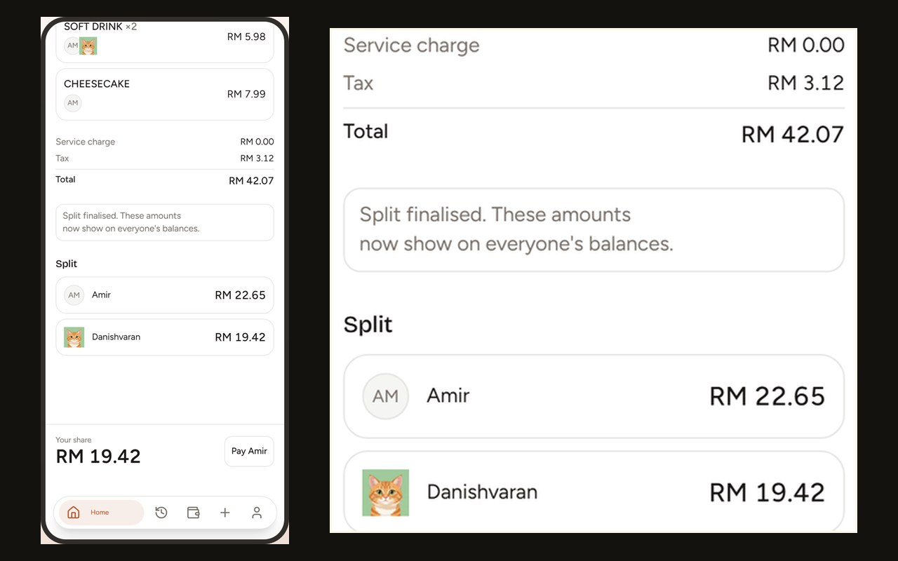

07 Post-Credits Scene

Live001
SplitBuddy
Photograph a restaurant receipt and a vision model turns it into structured line items in one call. Everyone claims what they actually ate, live on their own phone. Money is stored as integer cents end to end, tax and service charge follow spend rather than head count, and largest-remainder rounding means the bill reconciles to the exact sen — never losing one, never inventing one. Balances then net across every bill you have shared.
- Next.js
- TypeScript
- Supabase
- OpenAI Vision
- Tailwind